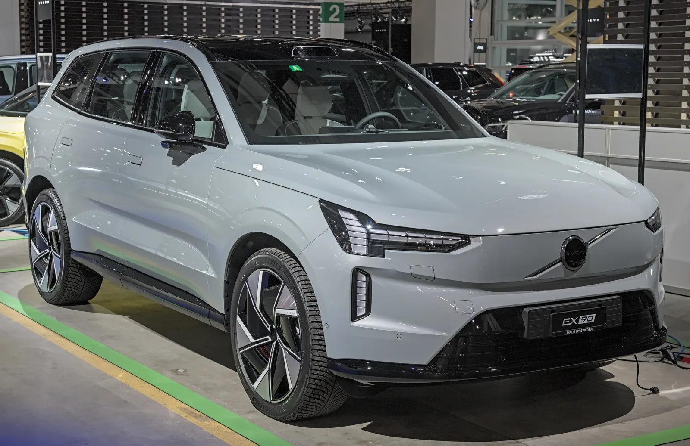
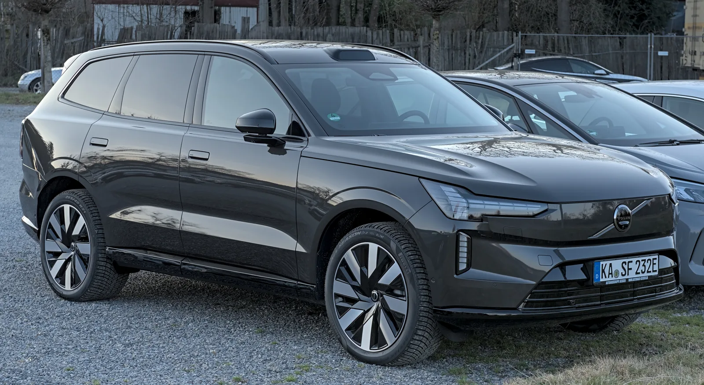

▲ 볼보 EX90 트윈 모터 울트라. 456마력으로 2.7톤이 넘는 차체를 가뿐하게 끌고 나간다는 평가를 받았다 ⓒ Volvo
볼보 EX90에는 두 가지 파워트레인이 있다. 456마력 트윈 모터와, 이보다 훨씬 강력한 680마력 퍼포먼스다. 숫자만 보면 퍼포먼스 쪽에 눈이 가지만, 실제로 몰아본 인상은 달랐다. 456마력 트윈 모터 울트라로 일정 구간을 시승한 결과, 가속페달을 밟는 거의 모든 순간 2.7톤이 넘는 차체 무게를 의식하기 어려울 만큼 충분한 힘을 냈다는 평가가 나왔다.
1. 456마력, 68.4kg·m — 숫자보다 체감이 먼저였다
EX90 트윈 모터 울트라는 앞뒤에 각각 전기모터를 얹은 듀얼 모터 AWD 방식으로, 합산 456마력과 68.4kg·m의 최대토크를 낸다. 상위 트림인 퍼포먼스가 680마력에 달하는 것과 비교하면 얼핏 아쉬운 숫자로 보일 수 있지만, 실제 주행에서는 이야기가 달랐다. 저속에서 부드럽게 출발하는 상황은 물론, 속도가 붙은 상태에서 다시 가속페달을 깊게 밟아도 차체를 힘겹게 끌어가는 느낌이 좀처럼 없었다는 것이 시승 소감의 핵심이다.
공차중량 2.7톤을 넘는 대형 SUV라는 점을 감안하면 이례적인 반응이다. "가속페달을 밟는 거의 모든 순간 2.7톤이 넘는 차체 무게를 의식하기 어려울 만큼 충분한 힘"이라는 평가와 함께, "이 정도면 굳이 더 빨라야 할 필요가 있을까"라는 생각이 먼저 들었다는 소감이 나왔다.
2. 트윈 모터 vs 퍼포먼스 — 제원으로 보는 차이
| 항목 | 트윈 모터 울트라 | 퍼포먼스 울트라 |
|---|---|---|
| 최고출력 | 456마력 | 680마력 |
| 0-100km/h | 5.5초 | 4.2초 |
| 배터리 | 106kWh NCM (공통) | |
| 가격(7인승) | 1억1620만 원 | 1억2120만 원 |
| 가격(6인승) | 1억1820만 원 | 1억2320만 원 |
가격 차이는 트림당 500만 원 수준이다. 퍼포먼스가 4.2초의 제로백으로 확실히 더 빠르지만, 시승기는 "456마력은 부족해서 타협한 출력이라기보다 EX90의 크기와 성격을 고려하면 충분하고도 남는 성능"이라며 "680마력보다 EX90 본래 성격에 가까운 선택"이라는 결론을 내렸다.
3. 듀얼 챔버 에어서스펜션 — 크기를 지우는 승차감

▲ EX90의 듀얼 챔버 에어서스펜션은 노면 충격을 빠르게 정리해, 큰 차체임에도 부담스러운 흔들림을 억제했다 ⓒ Volvo
서스펜션에 대한 평가도 우호적이었다. 요철을 넘을 때 첫 순간에는 살짝 툭 하는 충격이 전달되지만, 이후 차체의 상하 움직임을 상당히 빠르게 정리하면서 곧바로 안정감을 되찾는다는 것이다. 2차적인 움직임이 길게 이어지지 않는다는 점도 긍정적으로 평가됐다. 코너에서도 높은 차체가 좌우로 크게 흔들리며 운전자나 승객에게 부담을 주는 느낌이 적었다고 한다.
정숙성 역시 경쟁 대형 전기 SUV와 비교해도 상당히 높은 수준으로, 외부 소음을 효과적으로 차단한다는 평가가 나왔다. 스티어링 반응은 큰 차체를 생각하면 자연스러운 편이라, 2.7톤이 넘는 전기 SUV 특유의 둔한 움직임이 크게 느껴지지 않았다고 한다. 다만 후륜조향 기능이 빠져 있는 점은 아쉬운 대목으로 지적됐다.
📍 오디오·편의 사양
앞좌석 헤드레스트 스피커를 포함한 바워스앤윌킨스 1610W 오디오가 탑재됐다. 실내는 14.5인치 세로형 센터 디스플레이와 9인치 운전자 디스플레이를 중심으로, "화려한 소재를 여러 겹 사용하는 경쟁 플래그십 SUV와는 확실히 다른" 미니멀리즘이 강하게 느껴진다는 평가다.
4. 6인승이냐 7인승이냐 — 적재공간과 승하차

▲ EX90은 6인승과 7인승 두 가지 좌석 구성으로 판매된다. 3열까지 사용하는 승하차는 기대만큼 편하지 않았다는 평가다 ⓒ Volvo
EX90은 6인승과 7인승 두 가지 좌석 구성으로 판매된다. 적재공간은 3열을 접었을 때 324ℓ, 2·3열을 모두 접으면 6인승 기준 2082ℓ, 7인승 기준 2135ℓ까지 늘어난다. 여기에 프렁크(전방 트렁크) 46ℓ가 더해진다. 다만 3열까지 사용하는 과정에서는 승하차가 기대만큼 편하지 않다는 지적도 함께 나왔다.
✅ 시승 인상 핵심 정리
· 456마력·68.4kg·m로 2.7톤 차체를 가뿐하게 끌어내는 가속감
· 듀얼 챔버 에어서스펜션이 만드는 빠른 자세 정리와 안정감
· 경쟁 대형 전기 SUV급 이상의 정숙성
· 아쉬운 점은 후륜조향 부재와 3열 승하차 편의성
5. 도시 주행에서는 부담스러운 크기

▲ 볼보의 시그니처인 픽셀 LED 헤드램프와 토르의 망치 주간주행등이 EX90 전면부를 장식한다 ⓒ Volvo
전장 5040mm, 전폭 1965mm, 전고 1740mm, 휠베이스 2985mm에 달하는 차체는 시내에 들어오면 분명 부담스럽다는 평가도 나왔다. 표면을 훨씬 매끄럽게 다듬어 기존 XC90과는 다른 분위기를 내는 HD 픽셀 헤드램프, 플러시 도어 핸들 등 외관 디테일이 적용됐지만, 전장 5m가 넘고 전폭도 2m에 가까운 크기는 주차 공간에서부터 체감된다는 것이다.

▲ EX90 전면부의 센서 클러스터 디테일. HD 픽셀 헤드램프 등 XC90과는 다른 분위기의 디자인이 적용됐다 ⓒ Volvo
6. 국내 출시와 주행거리 — 트윈 모터 울트라는 얼마나 갈까

▲ 볼보 EX90은 2026년 4월 1일 국내 공식 출시됐다. 트윈 모터 플러스 7인승 기준 시작 가격은 1억620만 원이다 ⓒ Volvo
볼보 EX90은 2026년 4월 1일 국내에 공식 출시됐다. 시승기의 중심인 트윈 모터 울트라보다 한 단계 아래인 트윈 모터 플러스 7인승이 1억620만 원부터 시작하며, 이번에 다룬 트윈 모터 울트라(7인승 1억1620만 원)는 그 위 트림이다. 환경부 인증 기준 1회 충전 주행가능거리는 복합 454km로, 도심 485km·고속도로 417km 수준으로 나뉜다. 106kWh 배터리와 800V 아키텍처를 앞세워 350kW급 급속충전을 지원하는 것으로 알려졌다.
7. 요약
볼보 EX90 트윈 모터 울트라(456마력, 68.4kg·m)를 시승한 결과, 2.7톤이 넘는 차체 무게를 의식하기 어려울 만큼 충분한 가속감을 보여줬다. 0-100km/h 5.5초, 106kWh NCM 배터리를 탑재했으며, 680마력·4.2초의 퍼포먼스 트림과 비교해도 "EX90 본래 성격에 더 가까운 선택"이라는 평가를 받았다.
듀얼 챔버 에어서스펜션은 노면 충격을 빠르게 정리하는 승차감을, 정숙성은 경쟁 대형 전기 SUV급 이상을 보여줬다. 다만 후륜조향 기능 부재와 3열 승하차 편의성은 아쉬운 점으로 남았다.
가격은 트윈 모터 울트라 7인승 1억1620만 원, 6인승 1억1820만 원이며, 퍼포먼스 울트라는 각각 1억2120만 원, 1억2320만 원이다.